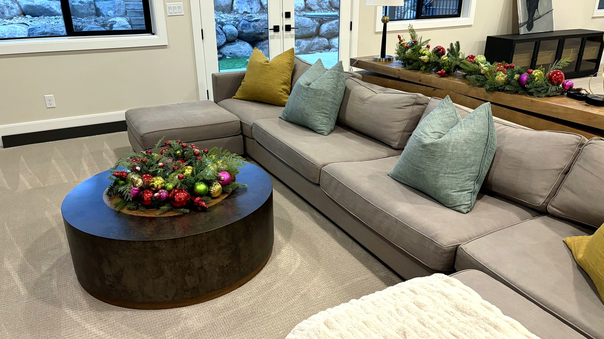
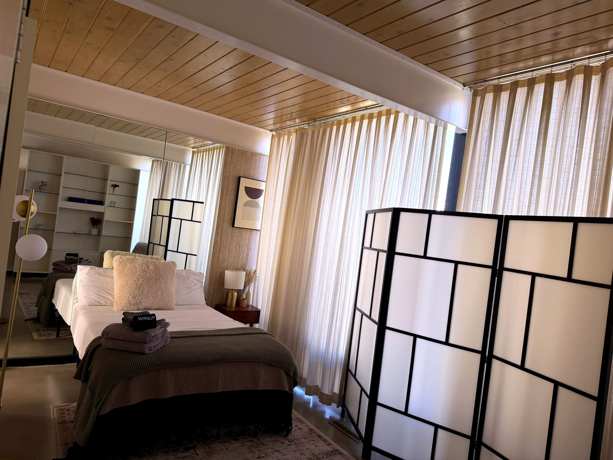
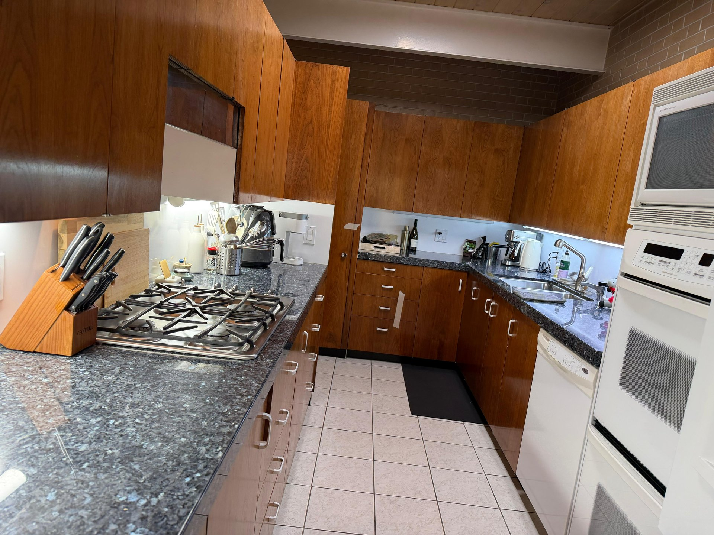

Before owner arrival
Focus the clean on kitchens, bathrooms, bedrooms, floors, entry areas, dust, and the rooms your household will use first.
Park City second-home cleaning
Sun Ray Cleaning helps part-time homeowners plan cleaning around owner arrivals, departures, family visits, seasonal openings, and the weeks between stays. Availability and scope are confirmed through a property-specific quote.

Cleaning around your stays
Second homes collect dust, hard-water spots, entry grit, and stale-room buildup even during quiet weeks. The right plan depends on how the property is used and how you want it to feel when you open the door.
Focus the clean on kitchens, bathrooms, bedrooms, floors, entry areas, dust, and the rooms your household will use first.
Reset the home after an owner or family stay so the next visit starts from a known, clean condition.
Use a weekly, biweekly, or monthly cleaning plan when regular maintenance fits the home, travel schedule, and route availability.
Plan deeper attention around ski-season grit, summer dust, guest visits, long vacancies, or a return after months away.
Choose the right scope
A lightly used condo before a weekend arrival may need a different plan than a larger home after holiday guests. Sun Ray builds the quote around the actual rooms, condition, access, timing, and priorities.


Quote details
The fastest useful quote describes the home and the visit instead of asking for a generic second-home price.
Share secure entry instructions only through the agreed private handoff after scheduling—not in a public message or page comment.
Park City coverage
Service availability is confirmed by quote for the property address and requested date.
Proof before booking
Use Sun Ray's review and gallery pages as separate trust sources. Photos show approved cleaning work; they should not be treated as proof of a specific property or neighborhood unless the image metadata says so.
See kitchens, bathrooms, bedrooms, living spaces, turnovers, and detailed resets.
View cleaning photosRead the current review page before deciding whether Sun Ray fits your home and priorities.
Read reviewsSend the home size, timing, condition, access needs, and priority rooms.
Request a quoteDirect answers
Related cleaning plans
Ongoing cleaning plans for part-time and full-time homes.
Compare recurring cleaningDeep cleaningA more detailed reset when seasonal buildup or long gaps need extra attention.
Compare deep cleaningOwner and guest prepPractical preparation for kitchens, bathrooms, entries, and guest spaces.
Read the guidePlanning your next arrival?
Send the neighborhood, bedrooms, bathrooms, square footage, requested date, arrival timing, current condition, and priority rooms.